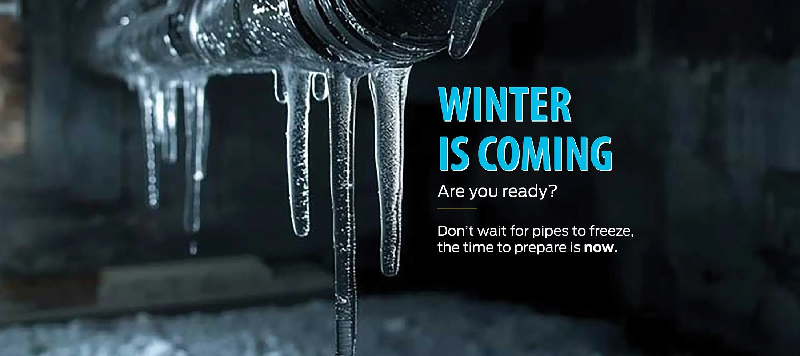
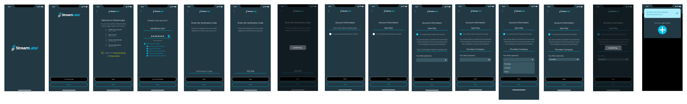

During my 6 month internship at Chubb, I had the opportunity to work with Streamlabs, a water leak detection company. I was tasked with a new user facing feature that allowed the transfer of account ownership between customers and plumbing professionals.
Timeline:
5 weeks
Programs:
Figma, FigJam, Jira, Slack
Product Design
UX Research
User Testing

Program Statement
StreamLabs Mobile app users, including customers and plumbers, lacked a reliable way to transfer ownership of products and locations to a new owner. This gap, often resorting relying on sharing passwords or phones instead, created friction and confusion for users unaware of transfer status.
Key Challenges
No clear process for transferring products and locations between users.
Limited visibility into whether a transfer was pending, completed, or revoked.
Uncertainty about how transfer decisions affected existing ownership and access.
An onboarding experience that did not fully account for the different needs of customers and plumbing professionals.
Designing for Three User Types
1. Old Homeowner
Initiating and managing the transfer.
An old homeowner are users moving out or transferring ownership of a property with existing StreamLabs products. They needs to Initiate the ownership transfer, understand its impact, and track or revoke the request when needed.
2. New Homeowner
Receiving ownership and gaining access.
New homeowner are users moving into a property with existing StreamLabs products that are still linked to the previous owner. They need to Accept ownership, gain access to the products and locations, and understand the transfer status.
3. Plumber
Supporting customers through ownership change.
Plumbers installing StreamLabs products or helping customers manage products across different properties. They need to set up an account tailored to their professional role and help facilitate a smooth ownership handoff when needed.
The Design Approach
I focused on making ownership transfers easier to understand by mapping out the transfer lifecycle, clarifying the consequences of each decision, and providing relevant updates at every major stage.
1. Designing the Transfer Flow
I created an end-to-end flow connecting the current owner and the new owner. The experience outlines the available actions and explains the impact of each transfer decision, helping users understand what happens before they proceed.
The flow also accounts for different outcomes, including accepting, rejecting, revoking, and waiting on a transfer. By considering these scenarios, the design provides a more consistent experience for both parties.
2. Improving Status Visibility and Notifications
To reduce uncertainty, I designed tailored transfer notifications and location statuses based on each user's situation.
Rather than treating every transfer the same way, the experience communicates relevant information to users who are receiving a transfer, awaiting a decision, revoking a request, or rejecting one. Email notifications at major stages help keep users informed even when they are not actively using the app.
3. Redesigning the Onboarding Experience
I also redesigned the existing mobile onboarding flow to collect additional account details, including name, company name, and role.
Recognizing that plumbing professionals have different needs from general customers, I created distinct onboarding journeys for plumbers and installers. This approach helps tailor the experience to each user's role and establishes a clearer foundation for account setup and product management.

The Outcome
The proposed experience creates a clearer and more transparent way to transfer ownership of StreamLabs products and locations.
By combining an end-to-end transfer flow, scenario-specific notifications, visible status updates, and role-based onboarding, the design aims to:
Reduce confusion by clarifying transfer decisions and their consequences.
Improve transparency by making ownership and transfer status easier to understand.
Support smoother handoffs between existing and new owners.
Create a more tailored experience for customers, plumbers, and installers.
The result is a more structured ownership transfer experience that gives users greater visibility and confidence throughout the process.